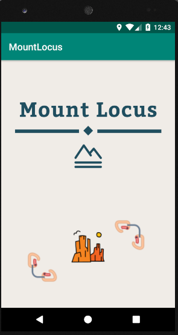
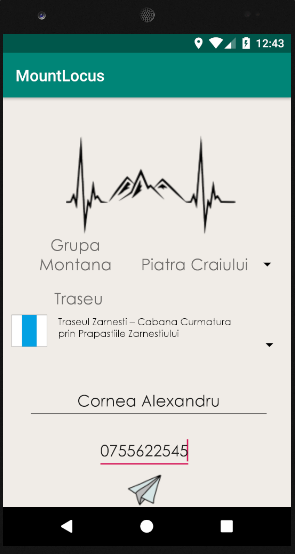
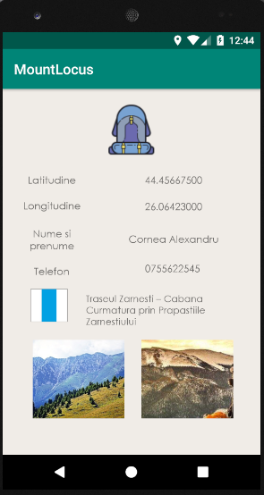
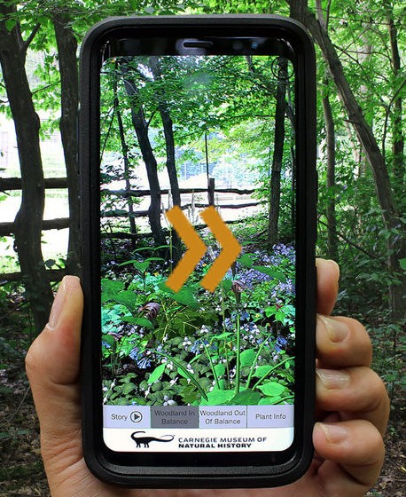

| Header | ||||||||
|---|---|---|---|---|---|---|---|---|
| ID | Nume si Prenume | Telefon | Grupa montana | Traseu montan | Data | Latitudine | Longitudine | |
Graficul traseelor
| Header | ||||||||
|---|---|---|---|---|---|---|---|---|
| ID | Nume si Prenume | Telefon | Grupa montana | Traseu montan | Data | Latitudine | Longitudine | |